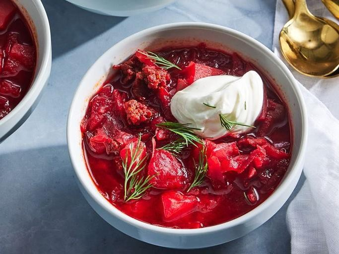

Borscht With Sour Cream
Home

Description
Halushki, a popular dish of traditional Ukrainian dumplings, consists of plump flour-based dumplings tossed with pan-fried bacon and veggies.
Typically, it's served in Ukrainian cafes at lunch or dinner time alongside a light salad.
Below, find a high-level overview of the flavor, texture, and cooking time.
Ingredients
- 2 tbsp olive oil
- 1 large onion, diced
- 2 cloves garlic, minced
- 4 medium beets, peeled and grated
- 2 large carrots, peeled and grated
- 6 cups vegetable broth
- 2 medium potatoes, peeled and cubed
- 1/2 small cabbage, shredded
- 2 tbsp red wine vinegar
- 1 tsp salt
- 1/2 tsp black pepper
- 1/2 cup sour cream
- 2 tbsp fresh dill, chopped
Steps
- Heat 2 tbsp olive oil in a large pot over medium heat.
- Add 1 large diced onion and cook for 5 minutes until translucent.
- Add 2 minced garlic cloves and cook for 1 minute until fragrant.
- Stir in 4 grated beets and 2 grated carrots, cooking for 5 minutes to soften.
- Pour in 6 cups vegetable broth and bring to a boil.
- Add 2 cubed potatoes and 1/2 shredded cabbage.
- Reduce heat to low, cover, and simmer for 30 minutes until vegetables are tender.
- Stir in 2 tbsp red wine vinegar, 1 tsp salt, and 1/2 tsp black pepper.
- Ladle into bowls and top each with a dollop of 1/2 cup sour cream.
- Garnish with 2 tbsp chopped fresh dill.